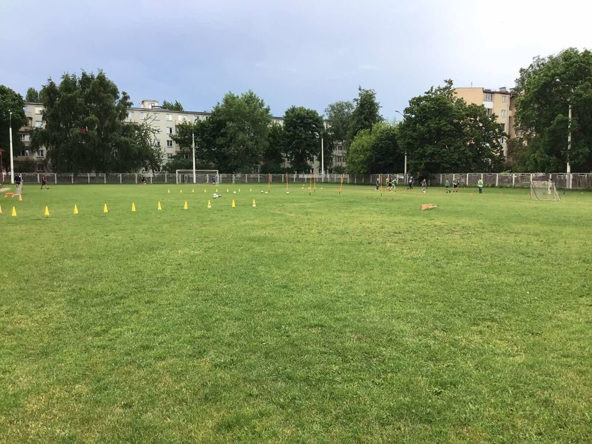
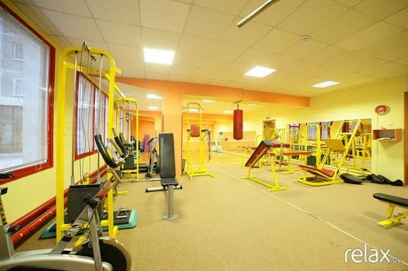
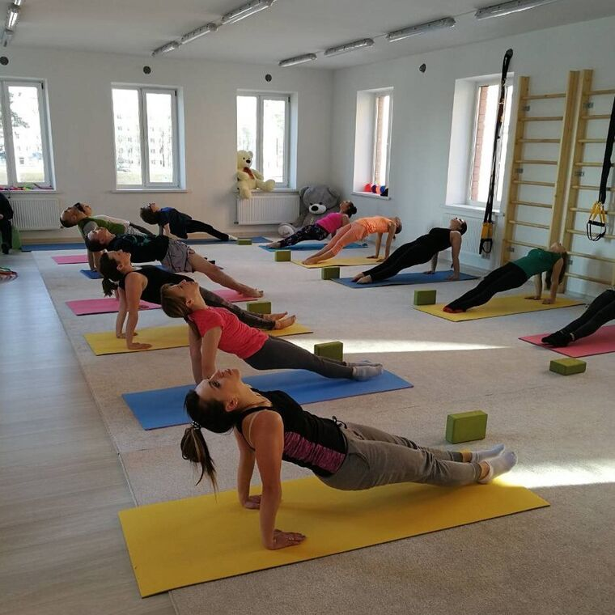

Стадион "Орлёнок" является одним из самых современных спортивных комплексов в Беларуси. Он был открыт в 2014 году и способен вмещать более 5 тысяч зрителей. На стадионе проводятся матчи спортивных соревнований, включая легкоатлетические соревнования, турниры по регби и другие виды спорта. Стадион "Орлёнок" имеет современную инфраструктуру, включая различные виды тренировочных залов, бассейн и спортивную площадку для детей. Также на территории стадиона есть кафе и магазин спортивной одежды. Стадион "Орлёнок" является важным спортивным объектом в Минске, который активно используется для проведения спортивных событий и развития физической культуры и спорта в регионе.

Фитнес центр ГУ "Центральный ФОЦ» ― идеальное место для занятий спортом. Он предоставляет возможность заниматься спортом и поддерживать свое здоровье в комфортных условиях. В фитнес центре ГУ "Центральный ФОЦ" имеется большой выбор тренажеров для кардиотренировок, силовых тренировок и функциональных тренировок. В залах фитнес центра есть все необходимые условия для занятий, такие как кондиционеры, зеркала, душевые и раздевалки. Кроме того, центр предоставляет услуги профессиональных тренеров, которые помогают разработать индивидуальную программу занятий и контролируют прогресс. В фитнес центре тренажерный зал, оснащён гантелями до 45 кг, тренажерами для мышц, беговыми дорожками, велотренажером. Регулярные занятия в тренажерном зале помогут обрести фигуру, оздоровить ваш организм, укрепить иммунитет и силу воли. В фитнес центре также имеется и уютный зал для занятий фитнесом.

Аэробика - это вид спорта, который включает в себя различные упражнения, направленные на улучшение сердечно-сосудистой системы, увеличение выносливости и снижение веса. Обычно аэробика проводится под музыку, что делает занятия интересными и эффективными. Силовая аэробика - это разновидность аэробики, которая включает в себя упражнения с использованием дополнительных грузов, таких как гантели, эластичные ленты и т.д. Эти упражнения направлены на укрепление мышц и повышение общей выносливости организма. Силовая аэробика является более интенсивным видом тренировок, чем обычная аэробика, так как включает в себя работу с дополнительными грузами, что требует большего напряжения мышц и сердечно-сосудистой системы. В целом, аэробика и силовая аэробика отлично помогают улучшить здоровье, повысить выносливость и снизить вес. Однако, перед началом занятий необходимо проконсультироваться с врачом и тренером, чтобы избежать возможных травм и повреждений.